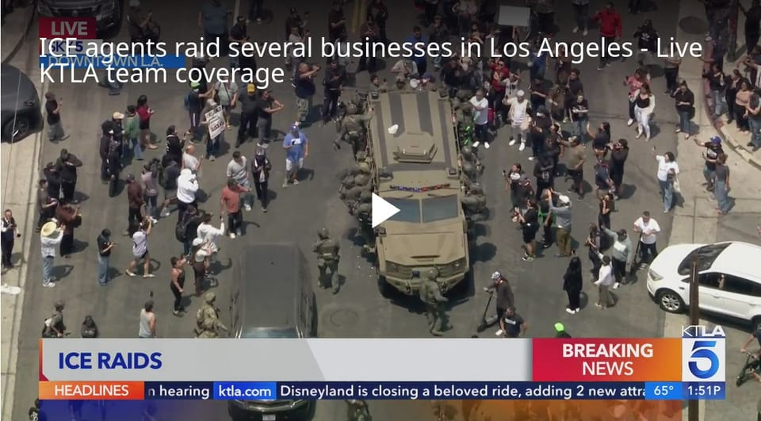

世界苦茶06月09日新闻 | 28条 | 中国五月CPI和PPI下滑严重

中国五月CPI和PPI下滑严重 | 美国加州移民冲突加剧 | 许其亮火花再揭示何卫东失势 | 教宗批判民族主义抬头
每天三件事：
苦茶数据
美元兑人民币：7.18（昨日7.18，前日7.18）
美元兑日元：144.43（昨日144.93，前日143.84）
上证指数：3393（昨日3385，前日3382）
标普500指数：休市（昨日6000，前日5930）
比特币：105708（昨日105545，前日105519）
布伦特原油：66.41（昨日66.47，前日65.14）
中国新闻
• 中英副总理将会谈 ：路透社引述英国政府消息人士星期天说，英国财政部长里夫斯将与本周访英的中国国务院副总理何立峰举行会谈。何立峰将于星期一在伦敦与美国经贸官员进行贸易谈判。中国外交部发言人上星期六晚称，何立峰将于6月8日至13日访问英国，其间，将与美方举行中美经贸磋商机制首次会议。英国政府的消息人士称，里夫斯将在何立峰访英期间与他举行双边会谈，但并未透露会谈举行的具体时间。
• 中共高官访问巴西开展研讨 ：中共中央委员会社会工作部部长吴汉圣星期五率团访问巴西。据新华社报道，吴汉圣应巴西劳工党邀请，于星期五到访巴西，展开为期两天的访问。访问期间，吴汉圣出席了中巴两党第八届理论研讨会，并同巴西总统府总秘书处副部长马福特会谈，就两国关系、党际合作、社会治理、国际形势等交换意见。 （翻評：這是中央新部門“社會工作部”非常少見的露出，而且作為黨務交流，讓社會工作部進行也很少見。）
• 王宁成河南新首富 ：泡泡玛特创始人王宁已取代牧原股份创始人秦英林，成为河南新首富。福布斯富豪榜星期天实时数据显示，王宁目前身家为203亿美元，牧原股份创始人秦英林身家为163亿美元。据红星新闻报道，王宁已取代秦英林，成为河南新首富。泡泡玛特旗下Labubu爆火，一娃难求，带动泡泡玛特股价。截至星期五收盘，泡泡玛特市值为3288亿港元。
• 中方探视在美被捕学者 ：中国学者在美国被起诉走私危险菌种，中国驻芝加哥总领馆官员视频探视了当事学者。据新华社报道，中领馆发言人称，已就美方执法部门未能履行中美领事条约规定的相关义务向美方提出严正交涉，总领馆官员星期六视频探视了当事中国学者。发言人说，中国政府一贯要求海外中国公民严格遵守当地法律法规，包括出入境相关规定。同时，中方依法维护海外中国公民的正当合法权益，坚决反对美方以意识形态和泛化国家安全为借口对有关案件搞政治操弄。
• 中缅互致贺电庆建交75年 ：中国国家主席习近平同缅甸军政府领导人敏昂莱星期天互致贺电，庆祝中缅建交75周年。据中国央视新闻报道，习近平指出，建交75年来，中缅胞波情谊历经风雨、历久弥坚。双方秉持共同倡导的和平共处五项原则和万隆精神，坚持睦邻友好，深化互利合作，在涉及彼此核心利益和重大关切问题上相互坚定支持，树立了国家间友好交往的典范。习近平强调，今年5月，他同敏昂莱在俄罗斯会晤，就推进中缅命运共同体建设达成重要共识。
• 许其亮火化证实何卫东失势 ：许其亮遗体 6月8日在八宝山火化。电视画面显示，除何卫东外的全体政治局委员都送了署名花圈，证实何卫东失势。全国人大常委会公报显示，去年11月停职审查的苗华因“涉嫌违纪违法”已于今年3月14日被罢免人大代表职务。今年5月末，国防部网站中央军委成员栏目已将苗华除名。
亚太印太新闻
• 日欧拟建竞争力同盟 ：日本共同社引述多名外交消息人士报道，日本与欧盟计划创设旨在强化产业的一揽子合作新机制“日欧竞争力同盟”，双方已就此展开协调。这一机制将推进自由贸易、确保矿产资源等强化经济安全保障的合作，并创造环境使日欧双方的企业易于扩大业务。据悉，有关消息预计将在7月日本举行的日欧定期首脑磋商期间发布。日本与欧盟已签署以取消关税为核心的经济合作协定，为维护基于规则的经济秩序，双方将进一步统一步调。新机制旨在强化日本与欧盟企业的竞争力，共同促进中国出口停滞的稀土类等供应链的多元化。双方就力争统一电动汽车及氢制造等环保技术的补贴发放条件，确保在日欧开展业务的企业得到公平环境，并减轻它们的开发负担。
• 马国国服报到率低引调查 ：马来西亚国防部今年1月分阶段重启国民服务计划，但在5月至6月开始的第二阶段国民服务3.0计划中，有高达37%学员未按时报到，国防部表明会彻查。马来报《阳光日报》报道，马国国防部副部长阿德里星期天受询时说，在550名受召学员中，有206人或37%未在5月16日的截止日期前向当局报到。这些学员缺席的原因包括健康问题，或有其他必须履行的职责。他说，国防部会彻查这些原因是否属实。一旦发现有关学员缺席的理由不当，当局将根据《国民服务法令》采取纪律行动，他们可能被判处社区服务。
• 台大砍补助引党派争议 ：台湾行政院大砍25%的地方补助款，行政院长卓荣泰称，当初审查预算表决支持政府的立委，所属地方政府将优先协助帮忙，并强调“这不是报复，而是轮回”。桌荣泰星期六的这一表态引发广泛批评。台湾联合新闻网报道，民众党主席、民众党立法院党团总召黄国昌星期天表示：“民进党真把国家当自己家？”黄国昌称桌荣泰如此发言视权力分立为无物、将人治心态表露无遗，难怪胆大妄为违法砍补助，卓除应道歉外更该知所进退。
• 泰境河流污染中企被疑 ：针对泰国境内谷河、塞河等河流发生重金属超标现象，疑似中企在缅甸境内采矿活动所致，中国驻泰国使馆表示，高度关注这一事件，支持开展科学和负责任的调查。中国驻泰国大使馆发言人星期天通过官方微信公众号发布答记者问称，中方高度关注泰国境内湄公河支流重金属污染事件。发言人表示，注意到泰国政府和有关地方近期发布的检测报告，支持泰缅双方加强沟通协调，开展科学、负责任的调查，通过友好协商解决问题。
• 随着美国撤退，中国在太平洋地区不断推进，澳大利亚和新西兰的担忧日益加剧： 中国外交部长王毅毫不掩饰地将中国与其试图在太平洋地区取代的强国进行对比。5月底，王毅在厦门举行的太平洋岛国论坛上表示，北京将“通过具体行动”履行对该地区的承诺，包括气候援助，而不是“某个大国退出《巴黎协定》。这极大地警示了澳大利亚和新西兰——这两个地区的主要大国，以及与美国、英国和加拿大一起加入“五眼”安全联盟的国家。堪培拉和惠灵顿多年来一直警告中国试图扩大其在太平洋地区的外交和安全影响力，但现在它们面临着在没有美国全力支持的情况下试图应对这一局面的前景。
科技新闻
• 苹果元老阿特金森逝世 ：比尔·阿特金森，这位在麦金塔电脑及其他具有里程碑意义的苹果产品开发中发挥关键作用的工程师因胰腺癌去世。在阿特金森的家人通过脸书宣布他去世后，《连线》杂志的史蒂芬·利维概述了阿特金森作为苹果公司第51名员工所取得的诸多成就。除了麦金塔电脑之外，他创建或参与开发的苹果项目还包括 Lisa 电脑、QuickDraw、Magic Slate和 HyperCard。阿特金森，享年74岁，最终对自然摄影充满热情，并且在去年被诊断出癌症时，在脸书上写道，他“已经度过了精彩而美好的人生”。
• Meta拟巨资投资Scale AI ：据知情人士透露，Meta 正在洽谈向人工智能初创公司 Scale AI 投资，这笔融资的鼓励可能超过 100 亿美元，使其成为有史以来规模最大的私人公司融资活动之一。交易条款尚未最终确定，仍有可能发生变化。Scale AI 的客户包括微软和 OpenAI，该公司提供数据标注服务，帮助企业训练机器学习模型，并已成为生成式人工智能热潮的主要受益者。这家初创公司在 2024 年的一轮融资中估值约为 140 亿美元，当时 Meta 和微软参与了该轮融资。
• 斯塔默呼吁黄仁勋为英国人提供AI培训： 基尔·斯塔默将于周一与英伟达联合创始人黄仁勋一同亮相，这位英国首相正将科技和人工智能置于其政府促进经济增长计划的核心位置。这位工党领袖将在伦敦与黄仁勋举行一场对话活动，以纪念一项协议，根据该协议，英伟达将帮助英国培训更多AI人才，并扩大在大学以及该公司位于英格兰西部布里斯托尔自有AI实验室的研究规模。斯塔默热衷于在这个关键的一周时伊始强调对技术和增长的积极愿景，工党政府将在议会期间推动其数千亿英镑的支出计划。财政大臣雷切尔·里夫斯正面临来自反对党和部分同僚的压力，原因是预计其他领域将进行削减。
财经新闻
• 中國5月通膨雙陷負值，CPI年減0.1%、PPI年減3.3%，通縮陰影籠罩： 中國5月通膨數據全面走弱，顯示內需動能疲軟，經濟復甦進程仍受挑戰。根據中國國家統計局週一公布的數據，5月消費者物價指數年減0.1%，連續第四個月呈現負增長，但比市場預估下滑0.2%來的好；而生產者物價指數年減幅度擴大至3.3%，比市場預估下滑3.2%來差，且遠低於前一個月下滑2.7%，創下2023年7月年跌4.4%以來最差紀錄，通縮壓力明顯升高。
• 美国非农就业增长放缓，关税不确定性令企业不知所措 ：面对特朗普政府加征进口关税的不确定性，美国5月非农就业岗位增加13.9万个，就业增长放缓，但薪资稳健上涨应能保持经济扩张，并可能让美联储推迟恢复降息。经济学家表示，特朗普总统对进口关税的态度反反复复，阻碍了企业提前计划的能力。数据公布后，金融市场押注美联储2025年将两次降息，削减了可能进行第三次降息的押注。
俄乌战争
• 俄人视德国为最大敌国 ：俄罗斯的最新民意调查结果显示，德国已经取代美国，成为俄罗斯人眼中最大的敌人。德国之声中文网报道，根据俄罗斯非官方的民意调查研究机构列瓦达中心的调查，被问及“最不友好的国家”时，55%的受访者认为是德国。中心说，自2020年5月以来，这一比率上升了40个百分点。过去20年间，美国一直位居“最不友好国家”榜首，如今仅有40%的受访者仍将美国列为最不友好的国家；2024年这一比率是76%。调查报告认为，这与美国总统特朗普执政期间俄美关系的回暖有关。
• 美国认为俄罗斯对乌克兰无人机袭击的报复行动尚未结束 ：美国官员告诉路透，美国认为俄罗斯总统普京威胁要对乌克兰上周末的无人机袭击进行的报复行为尚未真正发生，报复很可能是一次大规模且多管齐下的袭击。俄罗斯全面回应的时间尚不清楚，一位消息人士称预计将在几天内做出回应。另一名美国官员说，报复行动可能动用包括不同种类的空中能力，包括导弹和无人机。
其他新闻
• 特拉维夫爆发人质示威 ：以色列中部城市特拉维夫爆发大规模示威，集会者要求释放被关押在加沙地带的人质，以及以色列和哈马斯实现停火。法新社报道，数千人星期六晚上在特拉维夫参加示威活动。“人质与失踪者家属论坛”发布声明说，示威者聚集在邻近以色列国防军总部的人质广场，高呼“人民选择人质”，并要求当局就人质归还达成全面协议。哈马斯当天早些时候公布名为马坦·赞高克的人质照片，他看起来健康状况不佳。哈马斯警告说，他可能活不下来。
• 教宗批民族主义抬头 ：罗马天主教教宗良十四世星期天对民族主义政治运动的兴起提出批评，但没有点名任何国家或领导人。良十四世当天在圣彼得广场与数万名信徒一起参加弥撒时，祈求上帝“打开边境，推倒围墙，并消除仇恨”。他说：“偏见、把我们与领国隔离开来的‘安全区’，以及排他性思维模式都不应有立足之地。不幸的是，我们现在看到这种思维模式出现在政治民族主义运动中。”
• 美25大城市地陷严重 ：一项针对美国28个人口最多城市进行的最新研究发现，除三个城市以外，其余25个都处于下沉状态，且多数时候下沉情况十分严重。研究发现，受影响最严重的几个地区位于得克萨斯州，尤其是沃斯堡和休斯顿周边地区。得州因农业、工业及公共供水大量抽取地下水。这项研究的主要作者、哥伦比亚大学研究员奥亨亨指出，从地下抽取超出补给量的水资源，会直接影响地表。“这可能导致地面明显下沉。”
• 美恢复处理哈佛签证 ：据美国媒体报道，美国国务院通知全球使领事馆，恢复处理赴哈佛大学就读的学生签证申请，推翻此前发出的拒绝此类申请的指示。《华盛顿邮报》星期六报道，美国国务院星期五发布新指令，要求美国驻全球领事机构恢复处理哈佛大学学生和交流访问学者的签证。在此之前，美国法官刚刚阻止特朗普政府限制国际学生赴哈佛就读的举措。根据《华盛顿邮报》看到的文件副本，美国国务院曾于星期四发布一项指令，要求领事官员为受影响的申请人保留签证预约，并评估申请人是否具备入境美国的资格。不过指令表示，寻求在哈佛大学“开始学习课程或参加哈佛交流访问学者项目”的申请人，应该被拒绝。
• 德国拟三年内完成军购备战 ：德国军事采购局局长莱尼格-埃姆登说，德国武装部队有三年时间采购装备，以应对俄罗斯可能对北约领土发动的袭击。自2022年俄罗斯入侵乌克兰以来，国防开支已成为北约国家政治议程中的重要课题。美国最近又敦促北约成员国增加国防支出。莱尼格-埃姆登星期六告诉《每日镜报》，德国必须在2028年之前采购所有必要的装备，为保卫国家做好充分准备。
• 洛杉矶ICE突袭引抗议升级 ：美国移民与海关执法局于周五在洛杉矶突袭逮捕40多人后，抗议持续升温。在洛杉矶市中心和中国城的突袭现场，抗议人群尝试包围和阻止 ICE 车辆离开。 ICE 执法人员使用闪光弹以驱散人群。数小时后，抗议者向当地的拘留中心和联邦政府大楼聚集，并试图阻塞拘留中心的出入口。执法人员对人群释放催泪瓦斯。服务业雇员国际工会加州分部主席 David Huerta 在抗议中被捕并受伤，该工会代表加州超过75万服务业工人。抗议在周六持续，美国总统特朗普不顾加州州长反对，动用2000名加州国民警卫队前往洛杉矶。白宫称此举旨在解决加州无法无天状态，指责加州民主党领导未能保护民众。加州州长纽森批评此举是“故意挑衅”，会加剧紧张局势，并表示地方当局有能力维持秩序，无需联邦干预。国防部长赫格塞斯威胁若暴力持续，将调动现役海军陆战队。此次特朗普引用美国法典第十编的授权将部分加州国民警卫队置于联邦指挥下。2020年，特朗普曾要求多州派遣国民警卫队平息因乔治·弗洛伊德事件引发的抗议，但由于各方反对未援引叛乱法处理骚乱。
• 马斯克父批儿子惹错事 ：亿万富翁科技大亨埃隆·马斯克的父亲埃罗尔·马斯克前往莫斯科参加由俄罗斯著名宣传家亚历山大·杜金主持的论坛。埃罗尔·马斯克被列为 “2050未来论坛” 的发言人之一。他在接受俄罗斯媒体采访时，就埃隆与美国总统唐纳德·特朗普的不和，将矛头指向了儿子，称其行为是 “一个错误”。他说：“他们已经承受了五个月的巨大压力。让他们休息一下吧。”他指的是特朗普和他的团队。他表示：“他们必须摆脱反对者的影响，努力恢复正常，专注于日常事务等等。他们疲惫不堪，压力重重，所以发生这样的事情并不罕见。”埃罗尔补充说，他认为埃隆与特朗普之间的争端并不严重，并预计很快就会得到解决。
• 特朗普签命令防范无人机威胁 ：美国总统特朗普签署三项行政命令，加强美国对无人机威胁的防御能力，同时减少对中国等外国无人机制造商的依赖。美国将分别在2026年和2028年举办世界杯和夏季奥运会等重大体育赛事，白宫科学和技术政策办公室主任克拉齐奥斯星期五对记者说：“在这个时间点采取空域安全行动再合适不过了。”据官员介绍，这三项命令的目标是提振本土制造与创新，同时减少对外国对手的依赖。中国大疆创新科技有限公司销量占美国商用无人机总销量一半以上。
• 卢旺达失ECCAS轮值主席国资格 ：由于涉及刚果民主共和国东部地区冲突，卢旺达未能担任中非国家经济共同体的轮值主席国。中非国家经济共同体由11个国家组成，现任轮值主席为赤道几内亚总统奥比昂。法新社报道，卢旺达原定于星期六接过轮值主席国位子，但各成员国国家元首和政府首脑当天在赤道几内亚首都马拉博开会时，刚果民主共和国和布隆迪表示反对。
• 伊朗抨击美旅行禁令歧视 ：伊朗猛烈抨击美国总统特朗普对多个国家实施的旅行禁令，称此举显示出对伊朗人和回教徒的深刻敌意。路透社报道，特朗普政府星期三宣布全面禁止包括伊朗、阿富汗、缅甸在内的12个国家公民入境，并对古巴、布隆迪、老挝等七个国家的公民实施入境限制。伊朗外交部星期六在社媒发布声明说，特朗普政府仅因宗教和国籍而禁止伊朗国民入境的决定，不仅显示出美国决策者对伊朗人民和回教徒的深刻敌意，还违反国际法。